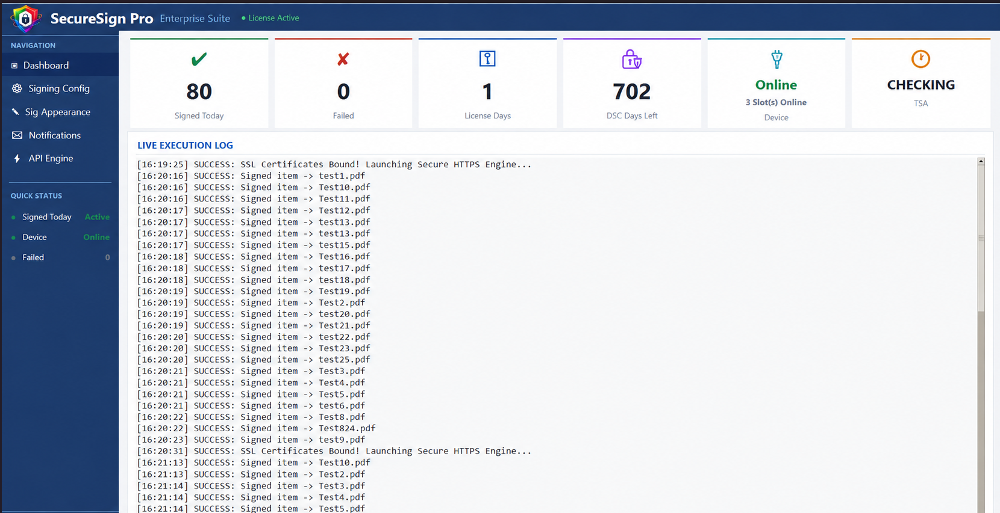
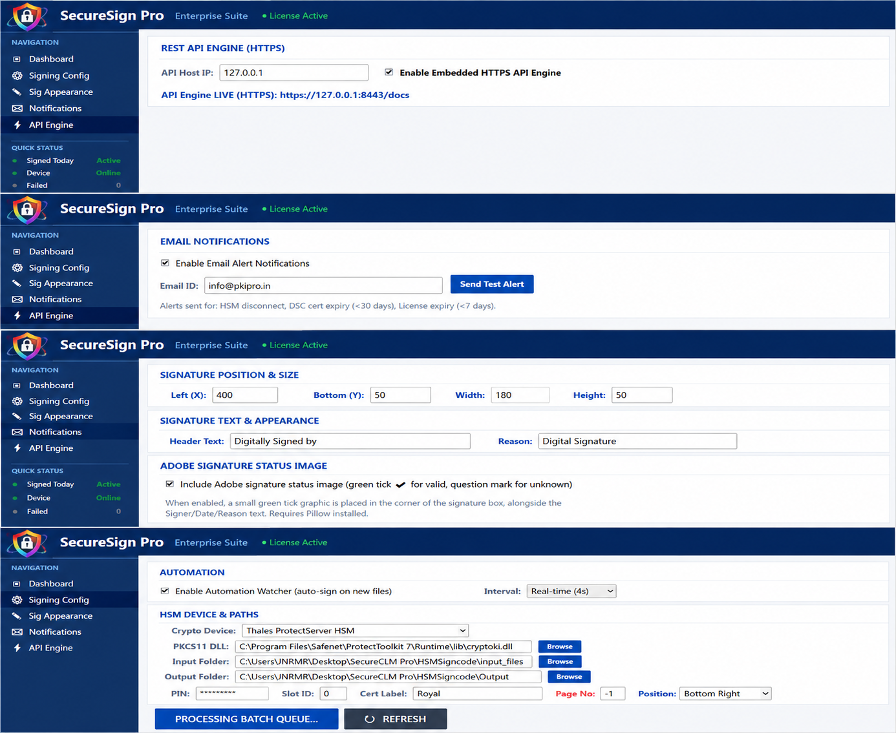
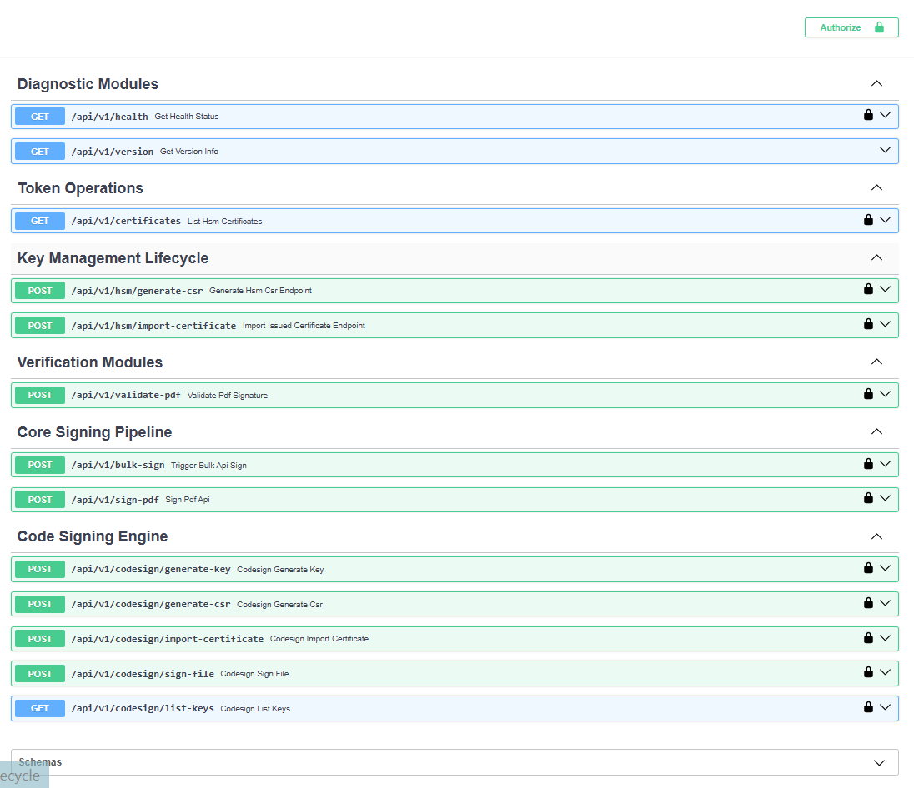

PKI Pro builds the infrastructure enterprises trust to sign, seal and audit their documents. Our flagship product, SecureSign Pro, turns HSM and USB-token signing into a batch job — not a bottleneck.
An enterprise signing engine for teams who process documents by the hundred, not the handful — connected straight to your HSM or USB token, no manual clicking through Adobe.
Point it at a folder, walk away. Every PDF inside is signed against your certificate in one pass, with a per-file result you can audit.
Works with PKCS#11 devices out of the box — Thales ProtectServer, SafeNet, and standard USB DSC tokens — without vendor lock-in.
Signatures render with a verified green check the moment Acrobat opens the file, backed by the Adobe AATL chain of trust.
Real-time, interval, or a fixed daily schedule — set a watcher on your input folder and let SecureSign Pro sign as files land.
Signed-today counters, device health, DSC expiry countdown, and a live execution log — the whole signing operation, at a glance.
Wire signing directly into your ERP, DMS, or invoicing pipeline with a straightforward API — no UI required in production.
SecureSign Pro is built to disappear into your existing workflow, not add a new one.
Plug in a USB token or point SecureSign Pro at your HSM's PKCS#11 library. It reads live slot and certificate status immediately.
Set the stamp position, header text, and reason once — every document afterwards inherits the same trusted appearance.
Run it on demand, on a schedule, or as a folder watcher, and keep an eye on signed/failed counts from the dashboard.
The same trust infrastructure, pointed at your certificate estate. SecureCLM Pro is a multi-CA certificate lifecycle platform that discovers, issues, renews, and deploys certificates across your servers automatically — HSM-backed, audit-ready, and built to stop the 2am expiry outage before it happens.
DigiCert, Sectigo, GlobalSign, Microsoft ADCS, and your own internal CA — issue and manage from one console instead of five vendor portals.
Thales Luna, Thales ProtectServer, Entrust nShield, and Utimaco — keys are generated and held on the HSM, never exposed in transit.
Auto-deploy renewed certificates straight to IIS, Linux (nginx/Apache), F5, and FortiGate — agentless over WinRM/SSH, or via a lightweight mTLS agent.
Point it at a subnet and it finds every live certificate on your estate — no more spreadsheet of "which server has which cert."
See what's expiring before it becomes an outage, and let SecureCLM Pro renew and redeploy it automatically — no calendar reminders required.
Every issuance, renewal, and deployment is logged — the same audit-ready standard SecureSign Pro already holds for signatures.
Every product we ship is held to the same standard: keys stay on hardware, deployment stays on your infrastructure, and every action leaves an audit trail.
Private keys are generated and used inside PKCS#11 hardware — Thales, Entrust, Utimaco, or a USB DSC token — and never touch disk in the clear.
Discovery, issuance, renewal, and deployment run on a schedule instead of a spreadsheet reminder, so nothing expires unnoticed.
DigiCert, Sectigo, GlobalSign, Microsoft ADCS, or your own internal CA — manage them all from a single console.
Ships with connectors for the HSMs, CAs, servers, and clouds enterprise teams already run — no custom glue code required.
Runs on your own Windows or Linux infrastructure, next to your HSM or token. Keys and documents never leave your network.
Every product exposes a REST API first, so signing and certificate operations can be wired directly into your own systems.
No rip-and-replace — PKI Pro connects to the HSMs, CAs, servers, and clouds already sitting in your infrastructure.
Thales Luna, Thales ProtectServer, Entrust nShield, Utimaco — PKCS#11 out of the box.
DigiCert, GlobalSign, Sectigo, and Microsoft ADCS for on-premise issuance.
AWS and Azure key stores and certificate services, alongside your on-premise HSM.
Automated deployment to IIS, Apache, NGINX, and F5 — agentless, over WinRM or SSH.
Every product in the PKI Pro line is designed around the same principle: the private key stays on the HSM or token, and only the operation result crosses the wire.
Signing happens inside the PKCS#11 session on the device itself — only the document hash goes in, only the signature comes out.
Software runs on your own Windows or Linux infrastructure. Documents, keys, and certificate data never go to an external cloud.
Every signature, issuance, renewal, and deployment is logged — a running record of what happened, when, and against which certificate.
Built on PKCS#11, PAdES long-term validation, and the Adobe AATL chain of trust — nothing proprietary for recipients to install.
Control who can trigger a signing run, issue a certificate, or view the audit log — not every user needs every permission.
Every hop between the application, the HSM, and your servers is encrypted — nothing crosses your network in the clear.
A look at the live execution log, device status, and expiry tracking teams check every day.

Live status for every connected HSM and token, at a glance.

API engine, alerts, signature appearance, and automation — all in one place.

Bulk signing, CSR generation, certificate import, and validation endpoints.
Any workflow that ends in "print, sign, scan, email" is a candidate.
Vendor, employment, and NDA paperwork signed the moment it's generated, not days later.
Finance teams batch-sign hundreds of invoices at month-end without touching Acrobat once.
Board resolutions, statutory letters, and regulator filings signed with a full audit trail.
Manufacturing and dealer networks push signed agreements out at the volume onboarding actually needs.
Write-ups on PKI, digital signatures, and what we're building next.
A first look at how PKCS#11 sessions, stamps, and the audit log fit together.
Trade-offs in throughput, cost, and compliance for growing teams.
A plain-language walk-through of the AATL chain of trust.
Product-specific questions? See the SecureSign Pro FAQ or SecureCLM Pro FAQ.
Every PKI Pro product runs on your own Windows or Linux infrastructure, next to your HSM or token. Documents, keys, and certificate data never go to an external cloud service.
No. Whether it's SecureSign Pro signing a document or SecureCLM Pro issuing a certificate, the private key stays on the HSM or token — only the operation result crosses the wire.
Thales Luna, Thales ProtectServer, Entrust nShield, and Utimaco HSMs; DigiCert, Sectigo, GlobalSign, and Microsoft ADCS for certificate authorities — see the full integrations list.
Yes — both are built on the same trust infrastructure. SecureCLM Pro can manage the very certificates SecureSign Pro signs with, so renewals never interrupt a signing pipeline.
Fill in the demo request form below, or reach out directly by email or phone — we'll walk you through a live demo on your own documents or certificate estate.
Tell us a bit about your team and we'll walk you through a live demo — signing your own sample PDFs against a test certificate.